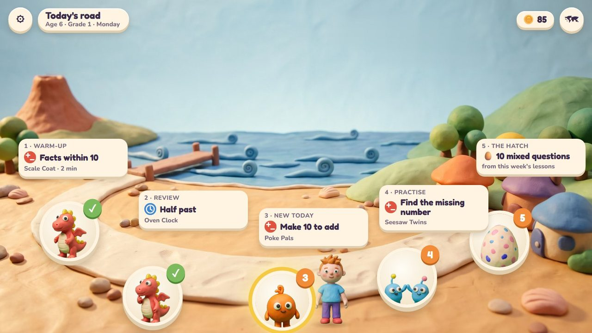
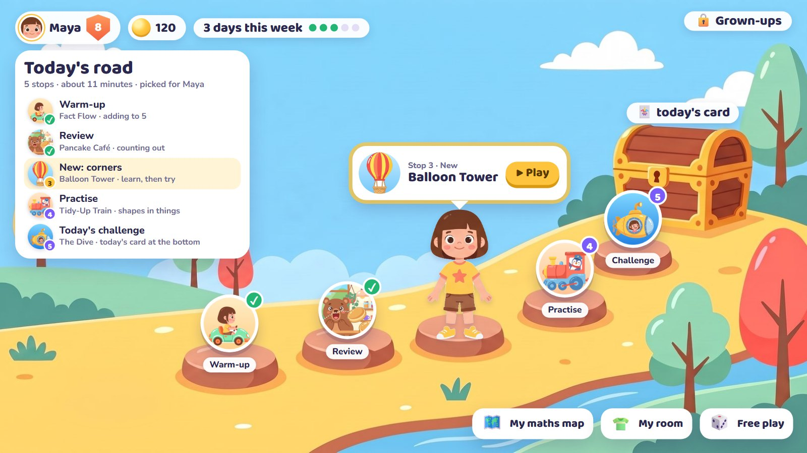
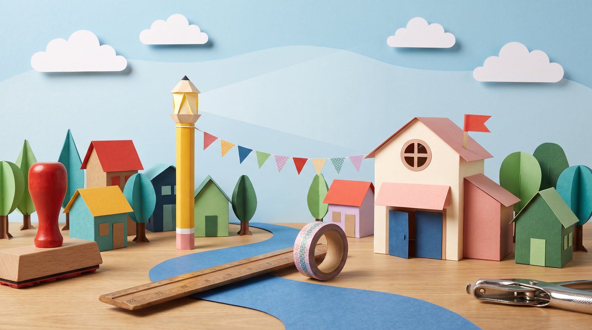
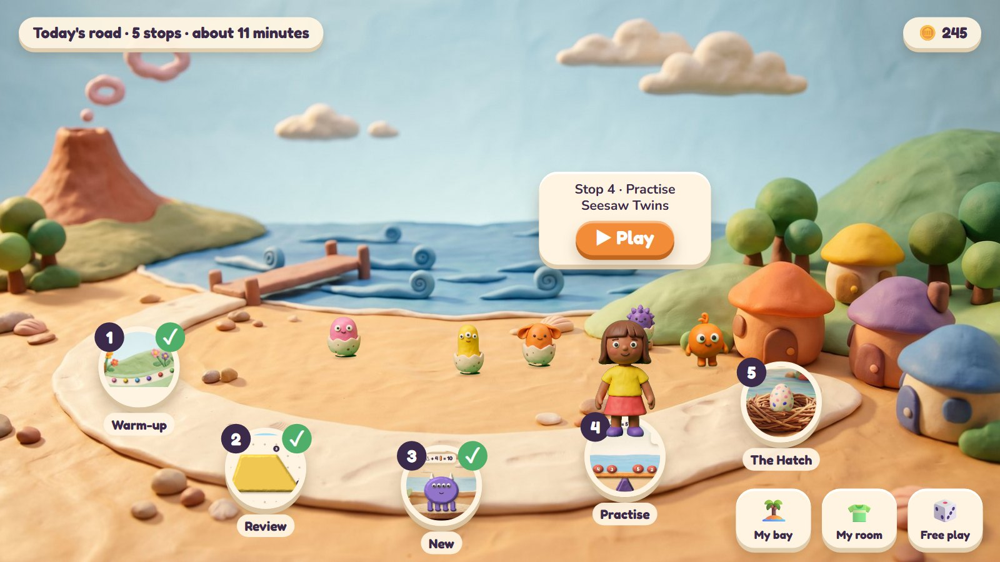

A maths app for ages 3 to 10: the plans
Four plans for the same app, side by side. Each one shows how a day works, how speed with number facts works, the characters, and several activities as storyboards. Open a plan from its picture; every page has an All plans link back here.
Nothing is built yet. The pictures are drafts made to show the idea; the storyboard screens are mock-ups.

Lessons and activities
Clay Bay: all of maths, age 3 to 10
How Clay Bay (the plan the app is being built from) teaches the whole of maths: 344 lessons in 10 topics for ages 3 to 10, taught by 12 activities that each serve many lessons and ages. A child always sees the topic and lesson, and from age 6 every activity has a quick round against your own best, to build speed. Coins earned in lessons open fun games in the Play Park. Every activity has a storyboard.
Open the plan →- Lessons
- 344, from 25 at age 3 to 54 at Grade 4
- Topics
- counting, adding, times, place value, fractions, measuring, time, money, shapes, graphs
- Activities
- 12: eight settled, four to pick from 29 ideas and 4 new rides
- Speed
- a quick round in every activity from age 6
The plan
Activities
The four plans at a glance
| The first plan | Paper Town | Clay Bay | Comic City | |
|---|---|---|---|---|
| Look | flat, rounded and bright | cut paper and origami | modelling clay, stop-motion style | an inked superhero comic |
| Friends | bear, frog, owl, fox, penguin, chick; living numbers and shapes | Tavu, Kebu, Welu, Ovu, Nefu, Zedu | Pom, Noodle, Mumba, Bim and Bam, Digsy, Fizz | Dot, Zip, Echo, Poly, Tock and Mega; Muddle the rascal |
| Daily challenge | the Dive: ten questions and a card | the Proof Press: a printed sheet | the Hatch: ten questions and an egg | Muddle's Mix-up: ten muddles on one page; an issue with your hero on the cover |
| Speed | Fact Flow, a race against your own best | the Band: the music speeds up | Roll-a-Giant and the Scale Coat | Zip's rooftop run against your own afterimage |
| Activities | 7, each with a storyboard | 6, each with a storyboard | 7, each with a storyboard | 7, each with a storyboard |

The first plan
Play, structure and speed
One short road a day: a speed warm-up, three activities picked for the child, and the day's challenge. Friendly animal friends ask for help, and the maths is something you do: flip pancakes, tidy a room, launch balloons, build a house.
Open the plan →- Look
- flat, rounded and bright
- Friends
- bear, frog, owl, fox, penguin, chick; living numbers and shapes
- Daily challenge
- the Dive: ten questions and a card
- Speed
- Fact Flow, a race against your own best
The day
Activities
More

Paper Town
A world of cut paper and origami
Everything is paper on a craft table. The child is a paper doll, the friends are folded origami animals, and every day a letter asks for help; the child's maths makes what the letter asks for, and a new piece goes into their paper town.
Open the plan →- Look
- cut paper and origami
- Friends
- Tavu, Kebu, Welu, Ovu, Nefu, Zedu
- Daily challenge
- the Proof Press: a printed sheet
- Speed
- the Band: the music speeds up
The day
Activities
More

Clay Bay
Maths you can squish
The first plan's learning rules in a seaside bay made of modelling clay, with much more hands-on play: press several fingers at once, pull, swipe to cut, twist, pinch to zoom. What children make stays alive in their own bay, and an egg hatches every day.
Open the plan →- Look
- modelling clay, stop-motion style
- Friends
- Pom, Noodle, Mumba, Bim and Bam, Digsy, Fizz
- Daily challenge
- the Hatch: ten questions and an egg
- Speed
- Roll-a-Giant and the Scale Coat
The day
Activities
More

Comic City
Every child is a superhero
An interactive superhero comic in which the child is the hero. Every day is an episode: three calls for help in any order, then Muddle's Mix-up. The comic page itself is the maths: panels are groups, a long panel is a number line, panels in a row are time, and the page turn shows whether an answer works.
Open the plan →- Look
- an inked superhero comic
- Friends
- Dot, Zip, Echo, Poly, Tock and Mega; Muddle the rascal
- Daily challenge
- Muddle's Mix-up: ten muddles on one page; an issue with your hero on the cover
- Speed
- Zip's rooftop run against your own afterimage
The day
Activities
More
Each plan ends with numbered questions. Answers on any plan, or a mix of plans, are welcome.